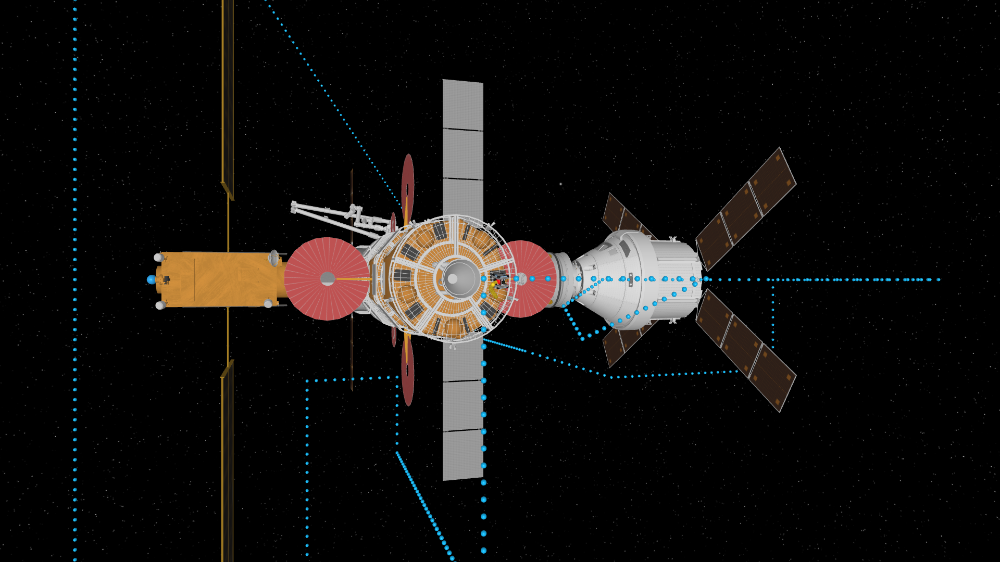

Lunar Gateway Inspection Under Thruster Failures
This experiment demonstrates close-proximity inspection of the Lunar Gateway using a 6-DoF free-flying robot operating near large-scale collision geometry. The task consists of station-keeping and waypoint-based inspection along reference trajectories produced by an inspection planner. The vehicle tracks full pose setpoints in SE(3) using a nominal nonlinear MPC controller.
The scenario can be executed in a nominal configuration as well as under injected actuator failures, which are applied on a per-thruster basis. In this inspection problem, we test performance with the stuck-off and stuck-on modes. During each run, the simulator logs vehicle trajectories, distance-to-target metrics, control effort, and explicit fault annotations.
| Failure Mode | Mean Lateral Error [m] | Mean Control Effort |
|---|---|---|
| Nominal | 0.04 | 21.20 |
| Stuck-off | 0.07 | 20.74 |
| Stuck-on | 0.09 | 40.32 |

SmallSatSim using the Gateway environment and the NominalMPCController with the MissionPlanner Inspection Planner. Early uses of SmallSatSim have included safe free-flyer inspection of cislunar stations under thruster failures.